Theriogenology · Calving, Difficult Birth & Newborn Calf Care
Calving is the most critical day in a cow's year. Most cows calve normally without help, but when birth goes wrong — dystocia — the lives of both cow and calf depend on quick, correct action. A farmer who knows the signs of normal calving, recognises trouble early and calls the veterinarian in time saves animals that would otherwise be lost.
This guide covers normal parturition in three stages, the causes and treatment of dystocia, caesarean section and obstetrical procedures, postpartum management of the cow, and newborn calf care — written with practical field guidance from real veterinary practice.
Normal Parturition — The Three Stages
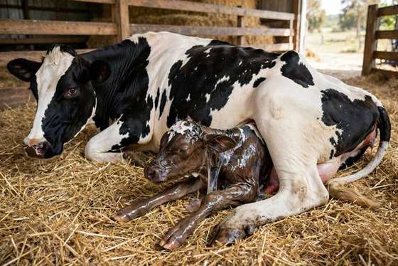
Normal calving in a clean, dry maternity pen
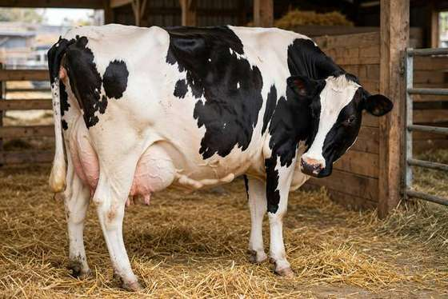
Signs of approaching calving — full udder, restlessness
Signs of approaching calving: udder filling and teats becoming full, relaxation of the pelvic ligaments, a swollen vulva with mucus discharge, restlessness, the cow separating from the herd, and a drop in body temperature in the last 24 hours. Move the cow to a clean, dry maternity pen with fresh straw as soon as these signs appear.
1
Stage 1 — Preparation (2–6 hours)(The cervix dilates; the cow is restless, lies down and stands up, looks at her flank and may stop eating)
2
Stage 2 — Delivery of the calf (30 minutes–2 hours)(Strong straining begins; the water bag appears, then two front feet and the nose; the calf is normally delivered within 2 hours of strong straining)
3
Stage 3 — Expulsion of the placenta (within 6–12 hours)(The afterbirth is passed; if it is not expelled within 12 hours it is a retained placenta and needs veterinary attention)
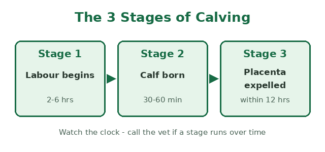
The 3 stages of calving — know the time limits
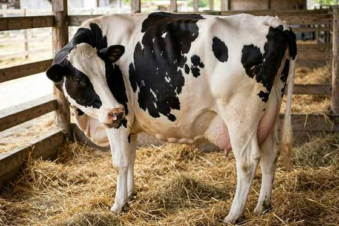
Stage 1 — restless, lying down and standing up
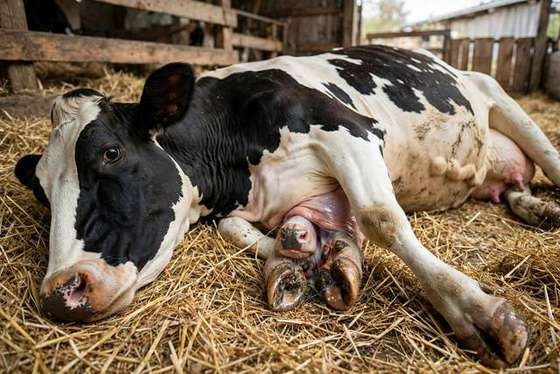
Stage 2 — feet and nose appear first
Watch from a distance and let the cow work. Interference too early causes more harm than good — but know the time limits and act the moment they are crossed.
Dystocia — Difficult Birth
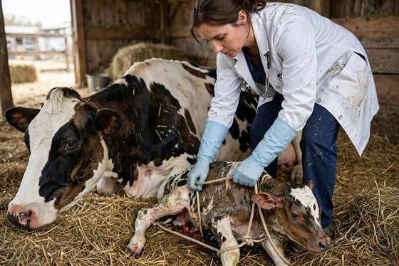
Veterinary assistance in dystocia — gentle, controlled traction
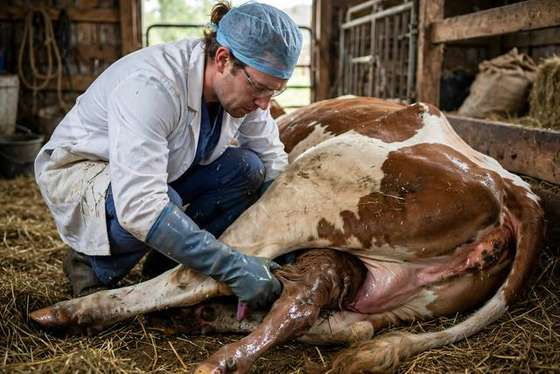
Correcting a malpresented calf — the commonest cause of dystocia
Dystocia means difficult or impossible birth. It is most common in first-calf heifers, in cows carrying an oversized calf, and where the calf is in an abnormal position. Every hour of delay reduces the calf's chance of survival and increases the risk of injury, infection and death for the cow.
1
Malpresentation, position or posture(Head turned back, leg retained, breech or transverse presentation — the commonest cause of dystocia)
2
Oversized calf(Feto-maternal disproportion — a calf too large for the birth canal, common with large-breed sires on small heifers)
3
Weak uterine contractions(Uterine inertia — the cow strains weakly or stops; often linked to low calcium or exhaustion)
4
Twins(Two calves entering the birth canal together, blocking each other)
5
Narrow pelvis or uterine torsion(A twisted uterus or a small pelvis makes vaginal delivery impossible)
Call the veterinarian immediately if: strong straining continues for 30 minutes with no progress; only one leg, a tail or nothing is visible; the water bag appeared more than 2 hours ago; the cow is exhausted or stops straining; or there is a foul smell or abnormal discharge.
What the Veterinarian Does — Step by Step
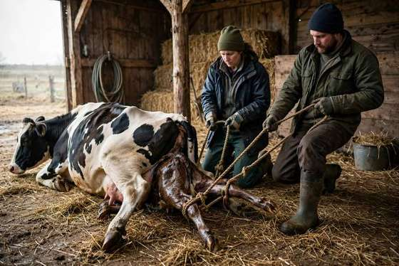
Controlled traction — ropes in line with the birth canal, in rhythm with contractions
1
History and examination(How long has she been in labour? A clean, gloved vaginal examination finds the calf's presentation, position, posture and whether it is alive)
2
Lubrication(Generous obstetrical lubricant reduces friction and protects the birth canal from tearing)
3
Correction (mutation)(The calf is gently pushed back, the head or leg is brought into position, and the calf is rotated into normal anterior or posterior presentation)
4
Controlled traction(Obstetrical ropes on the legs, pulled in line with the birth canal and in rhythm with contractions — the force of two people at most, never a tractor or vehicle)
5
Fetotomy — only when necessary(If the calf is dead and cannot be delivered whole, the veterinarian may reduce its size in parts inside the uterus; this is a skilled procedure done only by a veterinarian)
6
Know when to stop(If correction and traction fail within a reasonable time, further pulling injures the cow — the decision must move to surgery)
Caesarean Section & Obstetrical Procedures
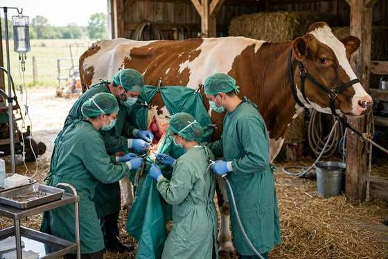
Caesarean section — a standing flank operation under local anaesthesia
A caesarean section is needed when the calf cannot be delivered through the birth canal: an irreducible malpresentation, an oversized calf, a dead emphysematous calf, uterine torsion that cannot be corrected, or a narrow pelvis. In cattle it is usually performed on the standing cow through the left flank under local anaesthesia, with the uterus opened and the calf delivered alive.
The decision for surgery should be made early — a caesarean performed on a fresh case saves both cow and calf, while one delayed for hours often saves neither. After surgery the cow needs antibiotics and anti-inflammatory medicines as prescribed by the veterinarian, wound care, and monitoring for infection, retained placenta and metritis.
Postpartum Management of the Cow
The first days after calving decide the cow's future milk yield and fertility. Check the cow at least twice daily for the first week.
Placenta: confirm it is fully expelled within 12 hours; a retained placenta needs veterinary treatment, never forced pulling.
Discharge and fever: foul-smelling discharge or fever above 39.5°C suggests metritis — contact the veterinarian promptly.
Calcium and energy: watch for milk fever (cold ears, trembling, inability to stand) in high-yielding cows, especially in the first 48 hours.
Feed and water: offer clean water and good-quality feed immediately; a fresh cow needs energy to recover and to produce milk.
Udder: check for heat, pain or abnormal milk — early mastitis treatment protects the lactation.
First heat: record it; most cows return to heat 30 to 60 days after calving, and breeding at the right time keeps the calving interval short.
Newborn Calf Care & Survival
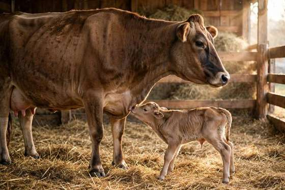
First suckle — colostrum within 2 hours of birth
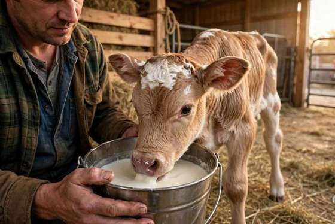
First colostrum from a bucket — within 2 hours of birth
Most calf deaths happen in the first 48 hours of life — and most are preventable. The first hour after birth is the golden hour.
1
Clear the airways(Wipe mucus from the nose and mouth; a weak calf may need gentle stimulation — rubbing with clean straw or tickling the nostril)
2
Check breathing and vigour(A healthy calf lifts its head within minutes and tries to stand within 30 to 60 minutes)
3
Disinfect the navel(Dip the navel cord in iodine solution as prescribed by the veterinarian to prevent navel infection)
4
Colostrum within 2 hours(The first milk is the calf's only source of antibodies — about 10% of body weight in the first 24 hours, the first feed within 2 hours)
5
Keep the calf warm and dry(Dry the calf, provide deep clean straw and shelter from cold and wind; a chilled calf cannot suckle)
6
Watch the suckling reflex(A calf that cannot suckle needs help — tube feeding by the veterinarian or a trained person)
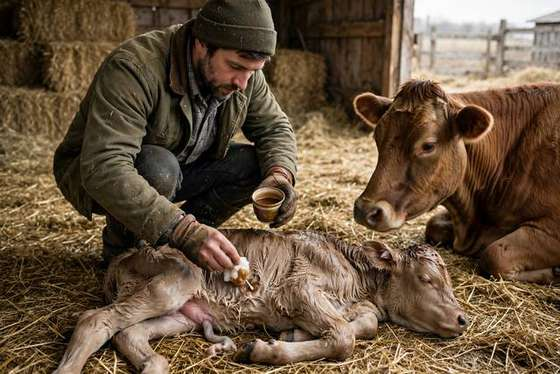
Disinfect the navel with iodine — prevents infection
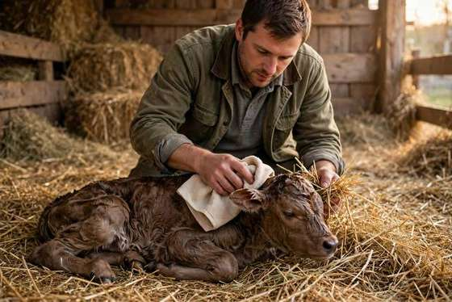
Dry and warm the calf — a chilled calf cannot suckle
⚠ Danger signs in a newborn calf:
Not standing within 2 hours or not suckling within 4 hours.
Cold ears, mouth or legs, or a calf that lies flat and will not lift its head.
Laboured breathing, a swollen or discharging navel, or watery diarrhoea.
Any of these signs needs a veterinarian the same day — calves deteriorate fast.
Frequently Asked Questions
What are the three stages of normal calving in cows?
Stage 1 is preparation: the cervix dilates and the cow becomes restless, usually lasting 2 to 6 hours. Stage 2 is delivery of the calf, normally completed within 30 minutes to 2 hours of strong straining. Stage 3 is expulsion of the placenta, usually within 6 to 12 hours after calving.
What causes dystocia in cattle?
The commonest causes are abnormal presentation, position or posture of the calf, an oversized calf relative to the birth canal, weak uterine contractions, twins, a narrow pelvis in heifers, and uterine torsion. Poor body condition, mineral imbalance and lack of exercise also increase the risk.
When should I call the vet for a difficult calving?
Call the veterinarian if strong straining continues for 30 minutes with no progress, if only one leg, a tail or nothing is visible, if the water bag appeared more than 2 hours ago without delivery, if the cow is exhausted or stops straining, or if there is a foul smell or abnormal discharge.
How does a veterinarian correct a malpresented calf?
After a clean vaginal examination and lubrication, the veterinarian gently repels the calf, corrects the head or leg position, and rotates the calf into the normal anterior or posterior presentation. Traction is then applied in line with the birth canal, in rhythm with the cow's contractions, using obstetrical ropes — never with excessive force.
When is a caesarean section needed in cattle?
A caesarean section is needed when the calf cannot be delivered through the birth canal — for example an irreducible malpresentation, an oversized calf, a dead emphysematous calf, uterine torsion that cannot be corrected, or a narrow pelvis. The decision should be made early, before the cow and calf are exhausted.
My cow has been pushing for an hour and nothing is coming — what do I do?
Do not keep waiting and do not pull blindly. Call the veterinarian at once. Keep the cow calm in a clean, dry place with fresh straw, do not let untrained people put hands inside, and note when the water bag appeared so you can tell the vet.
How soon must a newborn calf drink colostrum?
Within the first 2 hours of life, and as much as possible within the first 6 hours. A calf should receive about 10 percent of its body weight in colostrum during the first 24 hours. Late colostrum means poor immunity and a much higher risk of calf diarrhoea and death.
گائے کی مشکل زچگی (ڈسٹوشیا) کی صورت میں کیا کرنا چاہیے؟
اگر گائے آدھے گھنٹے تک زور لگائے اور بچہ نہ نکلے، یا صرف ایک ٹانگ یا دم نظر آئے تو فوراً ویٹرنری ڈاکٹر کو بلائیں۔ خود زبردستی کھینچنے سے گائے اور بچے دونوں کو نقصان پہنچ سکتا ہے۔ گائے کو صاف خشک جگہ پر رکھیں اور پانی کی تھیلی نمودار ہونے کا وقت نوٹ کریں۔
Key Takeaway
Calving rewards preparation and punishes delay. Know the three stages, watch the clock, call the veterinarian early, and give the newborn calf colostrum, warmth and a clean start. Most dystocia cases end well when the farmer recognises trouble in time and the veterinarian acts with skill. Follow current local veterinary authority guidance for all treatments and procedures.